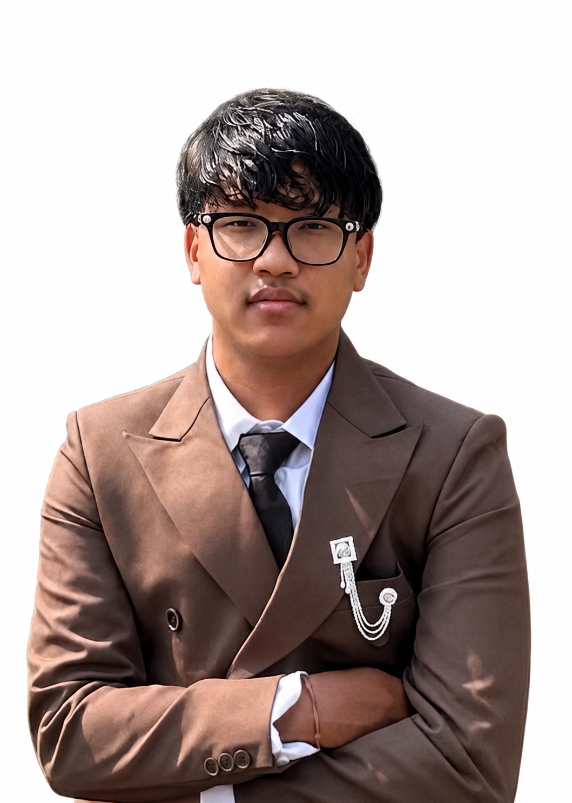

Meet Puspa Raj Moktan, the newest manager of ORIGINAL Esports. At just 19 years old, he brings strong passion, leadership energy, and a competitive mindset to the community. Originally from Ramechhap and currently living in Bhaktapur, Puspa is deeply interested in esports, domination, and building a powerful gaming environment for players and the team. With his dedication, confidence, and love for the esports scene, we are excited to have him join the ORIGINAL family and help lead the community toward bigger achievements ahead. 🔥🎮